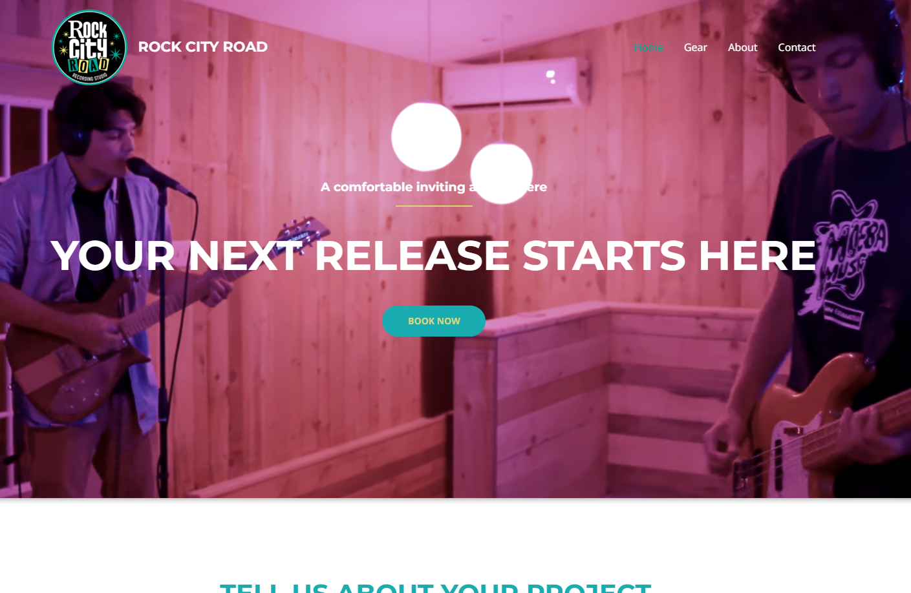
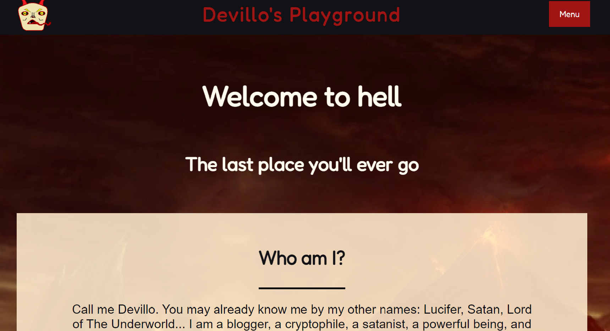

Rock City Road Recording Studio
A landing page and information site for a recording studio. The landing page has a video displaying the location. Other pages feature information about equipment and general practice.

Devillo's Playground
A comedic personal website for the devil. Calling himself devillo, this website serves as his personal content site. He uses it for his blog, videos of monkeys he likes, and a page about how to get in contact with him using a ouigie board.